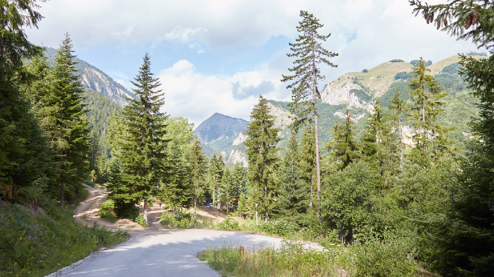
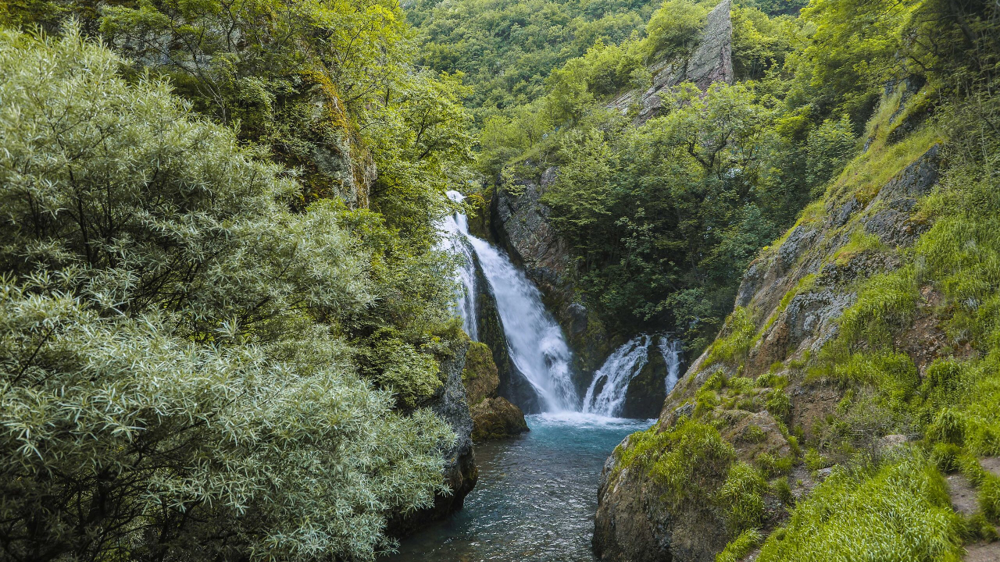
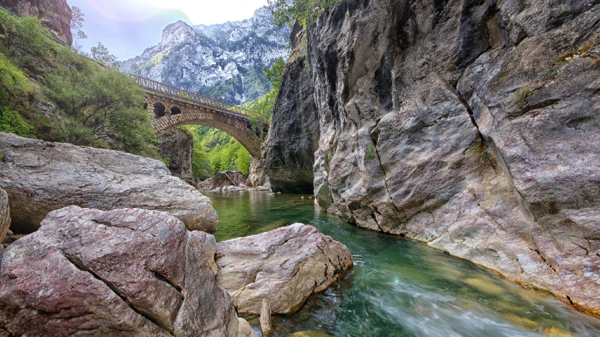

Welcome to Peja
Peja, often referred to as the city of nature, is a stunning destination nestled at the foot of the Rugova Mountains in Kosovo. Known for its breathtaking landscapes, rich history, and vibrant local culture, Peja offers a unique experience for nature lovers and adventure seekers alike. The city is home to some of the most beautiful natural attractions in the region, including the majestic Rugova Canyon and the pristine waters of Drini i Bardh.
Peja's history dates back to ancient times, with numerous archaeological sites and historical landmarks to explore. The city's Old Bazaar is a lively area where you can immerse yourself in the local culture, browse traditional crafts, and savor delicious local cuisine. Peja is also a gateway to many outdoor activities, from hiking and climbing in the Rugova Mountains to exploring the nearby waterfalls and rivers.
Tourist Information
Whether you're here for a short stay or an extended visit, Peja has something for everyone. Below are some must-visit spots and useful tips for making the most of your trip to Peja:
- Best time to visit: Spring and Autumn offer the most pleasant weather, ideal for outdoor activities and exploring the city.
- Local attractions:
- Rugova Mountains: A paradise for hikers and nature enthusiasts, offering stunning views, challenging trails, and the opportunity to connect with nature. 
- Drini i Bardh: Also known as the White Drin, this beautiful river is perfect for kayaking, fishing, and picnicking along its banks. 
- Rugova Canyon: One of Kosovo's most spectacular natural wonders, with dramatic cliffs, lush forests, and scenic walking paths. 